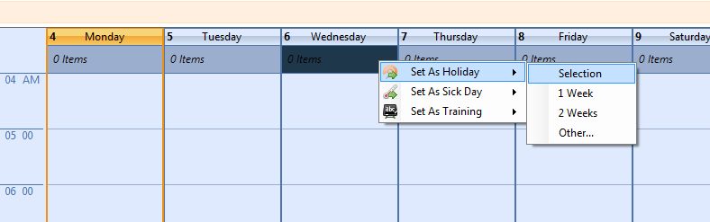

Absences are things such as Holidays, Sick Days, Training.
A day absence can be applied to a day by right clicking on the top of the day and selecting what you would like to apply.

The options are
- Selection - Just the selected days.
- 1 Week - 1 Week starting from the first day selected
- 2 Weeks - 2 Weeks starting from the first day selected.
- Other... - This will prompt you for how long you want to set the absence for.